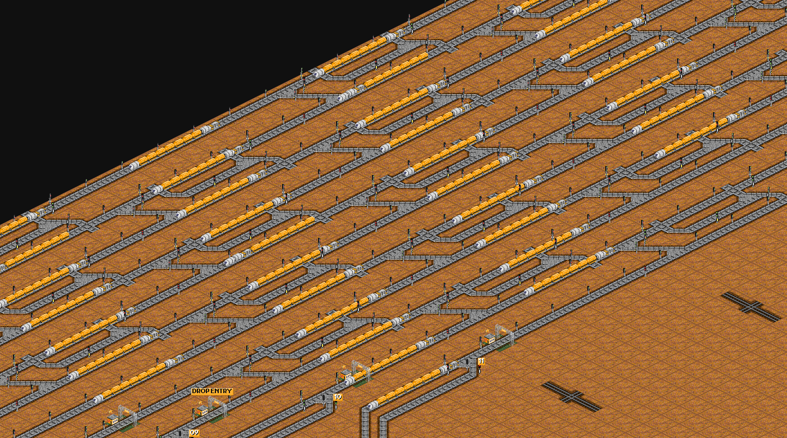
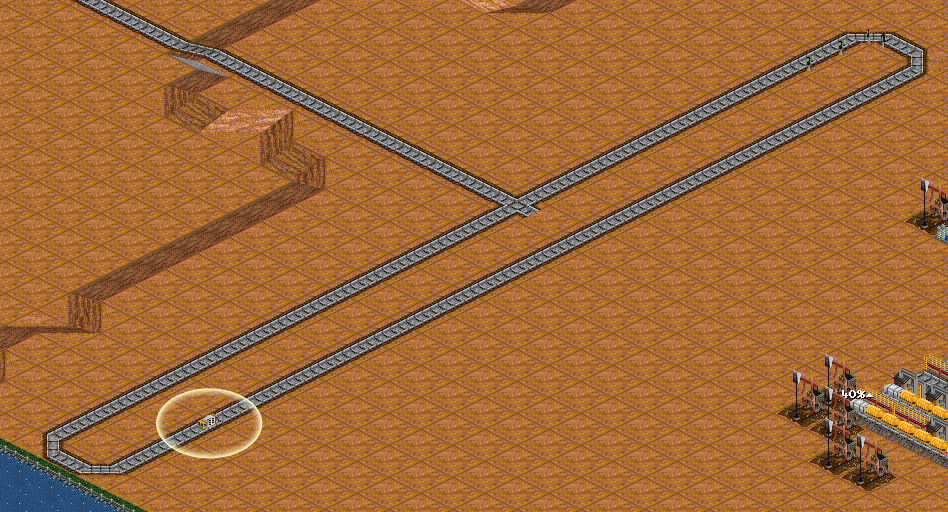
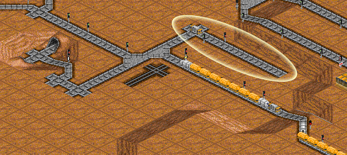
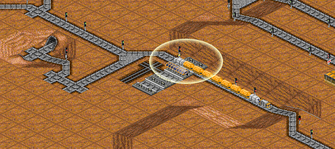
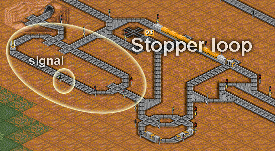
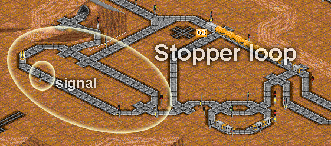
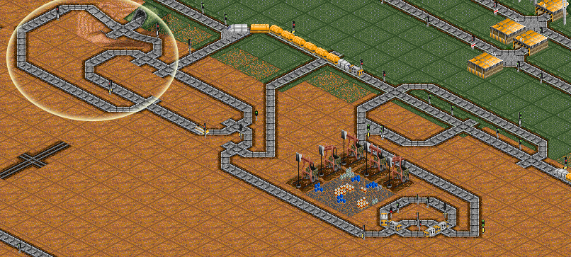
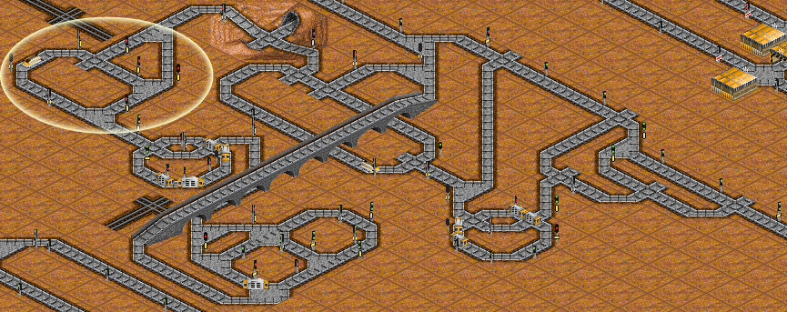
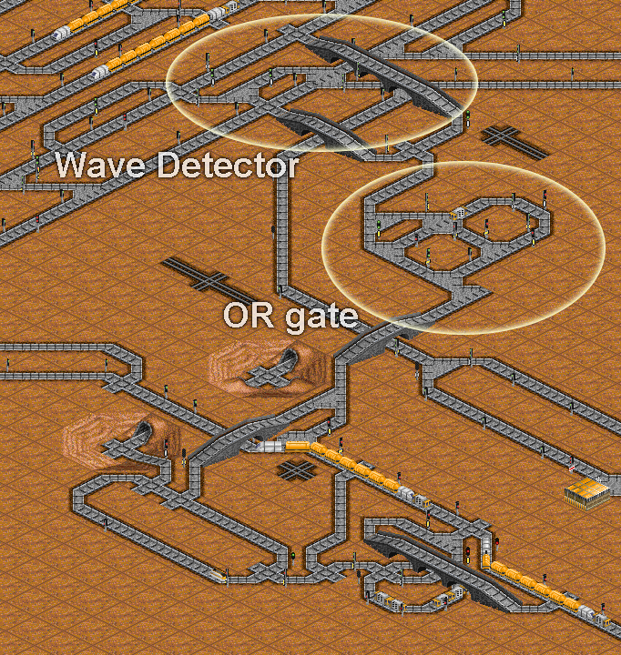
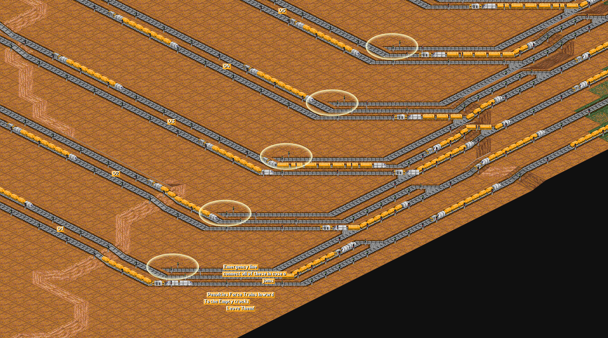

ProZone Game 13: Timed (aka insane) SML
As some of you might have already noticed, another PZ game has been finished. This time we focused on trying out the timed SML(below as t-SML) concept, and with it we experienced numerous interesting things. In this article I will attempt to show how was the t-SML developed from it’s very beginnings, how it works and what were the problems, solutions to them, and last but not least – examining a game with
200 169 goods production per month! Read further at your own risk!

The Development
Because this concept took me quite a while to develop and it went through quite some changes, I feel it appropriate to talk about it for a bit…
It all started back at the time of psg 172 when Osai presented an article about those super clever Fail-safe joiner. That thing is most useful for SML so we used it there. Here I actually realized what hapens with all so-far-known SMLs. The trains align just randomly, and sometimes they create large gaps between them. (that still is very effective but because I am a detailist, I want to have it perfect 😛 ) So I thought of a way how to fill these gaps in. The first solution was adding a train stop to the shifter array, meaning that the train would wait for a gap. The combination of the fail-safe shifter and this stopping shifter was called “hybrid shifter” and it was super effective. (SML itself is very effective) The problem was that this array took 90 tiles for TL5 iron ore 2x Lev4. Train acceleration trail acted big time in this, because longer acceleration just lengthened the arrays even further :(.
The next step was testing how to create the best train packing, and the idea with t-SML was here. From then it was hours of testing the timer and trying some joiner designs. That way hybrid shifters got completely trashed and we are free to use just the fail-safe SML shifters :).
The Purpose
SML itself has a goal to create effectively packed lines when being expandable to virtually endless amount of lanes, still keeping joiners simple without adding any mergers. The point of t-SML is the same, it only defines a “perfect packing” and tries to reach it based on released trains into their “planned positions”, not just based on probability that they will eventually reach those spots (which is impossible as classic SML shows).

This is the desired “perfect packing”. An amazing look when the game is unpaused :P.

Theoretically, this eliminates any problems with train acceleration. Although as you could see in PZ13, we used Lev4s with 1 gator for greatly insane acceleration. This was because the train needs to have full speed when joining the ML and we just didn’t want to move all joiners by 50 tiles to make them have enough time to accelerate. Another advantage in such acceleration is when any problem/mistake occurs – trains with better acceleration can unjam faster.
How it works
After defining the perfect packing (for TL5 it was 5 tile gaps between each train – shorter gaps would fail on diagonals due to FS1063 – this means a train head is at every 11th tile), we set a grid, where the join tiles can be – each 10 tiles. 
When the timer is tested and set up, it releases trains from all of these joins at the same time periods. That way we can reach their “ideal spots” because all of them are connected to the same timer.
The central timer, controlling all of the joiners.
This also means that we need to have everything synchronized – all ML lines must be equally long in the shifter array areas, and also all of the joins must be the same distance from the ML and on their marked spots by the grid. It is essential to use magic dozer, free terraforming, and 0% slope steepness.

Joiners
The joiner is supposed to do various things. First of all we need to release a train at the given time we want it to be released (defined by the central timer). A joiner at this state would be far from sufficient because trains must accelerate from 0kmh in order to keep all of the joins synced together.
Train Stoppers
Bouncing Train Stopper
This thing was first introduced in the hybrid shifter – accelerated join part. It basicaly was a gator set on parameter 3500 that bounced so fast that it was able to stop any train coming to the signal. The largest problem was that it could be stopping the coming train at the same time as the central timer says “go”. That way we need longer period of central timer saying “go” to keep it possible to release trains reasonably well. And longer period of central timer means less precision. So we needed something better. 

Station Train Stoper
Another not-ideal try was building stations in front of the releaser signals, making trains stop in the stations for just a few ticks. This didn’t really work because the trains still travel about half a tile from the station to the signal, which was enough to accelerate to cause desyncs on the ML. And as a side-effect trains also took some time to stop in the stations, resulting in a very bad throughput. 
In the station trains were supposed to stop down to 0kmh, setting the station in orders with (no unload and take cargo), timetabling it for a few ticks to stay in the station. (we used 10, but 1 tick might have been enough … the stopper didn’t work anyway :D)

On Demand Train Stopper
Later on we came up with a different solution. There is a train (Lev3) in a circle, waiting to be released. When a train approaches the joiner, this stopper train gets into it’s path and stops it. This makes perfectly sure that they stop. 

The stopper train is released on demand, just when a train is approaching the joiner, that way stopping it without any exceptions.
Possible Flaws
Because syncing trains 643kmh fast in speed requires extreme precision, there are various desync sources.
Timer Flaw
First of them all is wrong timer settings. That is “easily” solved just by testing a better timer. Luckily, in our game we had perfect timer from the start, so we didn’t have any problems with that.
Broken Shifter
Since we had over 400 shifters, it was really easy to have missing signals or anything similar in them. Although easy to make, hard to spot these mistakes.
Joiner Desync
A very bad thing is when joiners aren’t precise and they release trains at wrong times or in wrong speeds. This can happen when trains don’t stop down to zero on the joiner-release-signal or just when the joiner makes some mistake.
Train Waves
Since all trains have some fixed spots where they should get on the ML, it is possible that trains start “favorizing” some times when to join, therefore making a wave. This can result in drastically reducing ML throughput!
Various Joiners
We solved the train wave problem by having different joiners. Simply put, none of our joiners was able to release trains on every central timer release period. This means that for example we had all joiners able to send trains every 2nd period. What happened was that trains fixed on “joining on odd times” or “joining on even times” and then caused waves. Not very precise but somewhat sufficient solution was varying the joiners – releasing every ~3rd up to 5th periods. Especially when supported by the Waveproof joiners.   
The first joiner releases up to about every 3rd timer tick, the second one stops the train for a bit longer, reaching about every 4th timer tick release. The third one just adds one more tick when it waits at the entry signal for another tick, making it about 4+1. All of those are just “up to 4th” but it can get more random if for example a train doesn’t arrive in time. The fourth joiner makes it strictly every 5th central timer tick.


Waveproof Joiner
When there actually occured a wave, we had joiners that didn’t send another train into the wave, but waited for the next possible release time where wouldn’t be any wave. That way if there was a wave, the emptier spaces started to be preferred so the wave got a bit negated. 
The wave detector detects any wave by “looking” at the two outermost lines. If there are trains in both these waves, the OR gate becomes red and makes joining impossible.

Causes of Timed SML
As this type of network is quite different from others due to some requirements on ML design and such, it has some influence how the ML looks.
Insane Precision Requirements
Every mechanism has to work absolutely perfectly and be absolutely fail-safe. Any problem on the ML (just one) can result in a jam forever due to evil-mode of joins after the drop station. Also the joiners need absolute precision to make it possible to reach the absolute packing state.
Extreme Throughput
This t-SML really reaches total packing. Because of that we need the ML to be ready for absolute throughput. Starting from flawless signal gaps, ending with diagonal problems solutions. Particularly diagonals are one big problem.
Diagonals
You just can’t have trains with our “ideal packing case” on full diagonals. Because of that we had to split trains in front of our curve, then letting them into the drop station, and then merging those split lines back. All this was done while keeping both of the lines synced through all of the drop platforms.
Also on splits from the ML to the sidelines weren’t unproblematic. We had to split trains from straight tracks – not full diagonals – otherwise they slowed down a bit, resulting in desynchronizations and major issues.
Absolute Effectiveness
In the past boost games, we have reached up to 100k goods produced as our record. If we measure how many lines lead into the drop, psg121 had 16 lines, psg176 18 lines. In PZ13 we totally destroyed the current record with 200k goods produced per month only from 11 lines! (Note that this comparison can’t be very exact because of different train speeds and wagons used. It just points out how about effective t-SML is though.)
Game Stages
It is also interesting to note how the game progressed, because the mood among players changed quite a bit throughout the game.
New Game?!
It doesn’t happen all that often that we have an active PZ game. It also brought quite some surprise and a few people said “another overkill PZ game that isn’t going to be played”. After we succeded to bring this game to life through some positive mood and desire for construction, we started building everything.
Building the ML
Even though we didn’t use it, this stage was worth of copy&paste patch. Endless amount of shifters, huge station, many joiners, massive splits of almost identical structure. This was quite boring but because we were interested how will this concept turn out, we did some minion-slave-labour until having our backs half-dead and our eyes bleeding.
Adjusting Joiners
After we had the ML, we started to run trains there. The most intense moment of the whole game – making the t-SML actually work flawlessly. Finding flaws in the shifters, joiners and anything else was quite hard, fixing was usually easier when we knew the issue already. With time we tried a few joiner types in order to reach the flawless ones. This stage lasted basically until the end of the game because we were still improving and modifying the joiners.
SL management
A very important thing was to keep all primary stations running. Because of the insane amounts of oil required, we had to double some SLs, expand almost all primary pickups, manage train counts, and so on.
Crisis Management
Once even a little jam occurs, the packed network can’t get rid of it on it’s own. We solved problems via our Emergency Center but even so, any problems were almost immediately serious. 
These points were connected at a time of jam. That way trains kind of shifted to the emptier lines and unjammed in time.

Counting Production
In spare time, we recorded how our goods productions raised. We started a record table on 65k when it was clear we are going to reach very high values. Although this “job” might seem easy, you need at least half of the game month in order to count the productions of all ten refineries :D. Also, this also caused the most “HOLY S***!”, “OMFG””, “WOW”, “What, you kidding?” words.
Too heavy to play
Because SML uses extreme amounts of CPU, we were forced to stop playing over the internet. I loaded the game in singleplayer and with some aid from Vitus, I have fixed the rest of issues and mistakes that were in our game.
Conclusion
PZ13 was one of those unique games where we test a new idea. If we play the same idea again, it would be boring because it is all the same although for the first try it is amazing such as PSGs 121, 157 or 180. At the same time this game set a new record of 150k goods produced per month, which I can’t really tell how to beat at this moment – because the t-SML shown just incredible results with the probably best even possible performance. This game was just pure insanity at it’s best and I am looking forward to enjoy another game of this kind. 🙂 I would like to thank everyone who helped me in this game, especially Vitus for helping me fixing the game offline, intensive joiner mechanics development and flaw analysis, Razaekel for his endless patience and effort to build a lot of stuff, ^Spike^ for helping with building even when others CPUs were already burning and positive mood in order to make people to play the game, Combuster for great SL management, split enlargements, and his always nice eyecandy works, and Chris Booth for helping me destroy all the cities to reach record world population of 0 :). Thanks guys, this was NUTS! 🙂
Categories: Community News
Mucht August 7, 2010 21:12
Wow!
V453000 August 7, 2010 21:42
😉